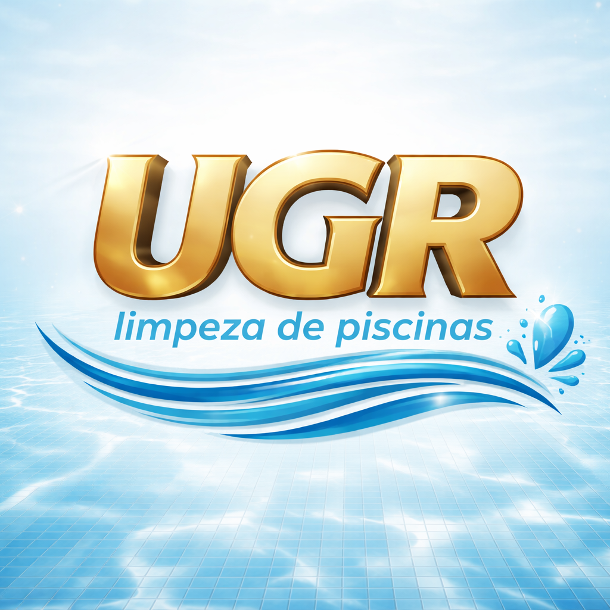

A UGR Limpeza de Piscinas oferece serviços especializados para manter sua piscina sempre limpa, segura e pronta para uso. Atuamos com métodos eficientes, produtos adequados e atenção aos detalhes.
Nosso objetivo é garantir água cristalina, equilíbrio químico correto e preservação da estrutura da piscina, proporcionando tranquilidade e bem-estar para você e sua família.